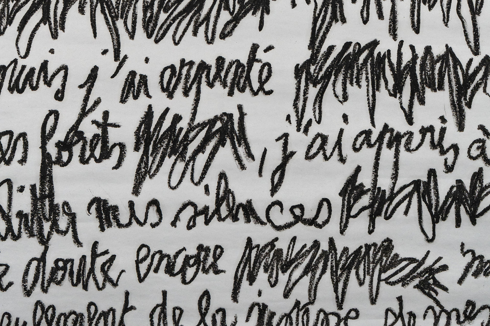
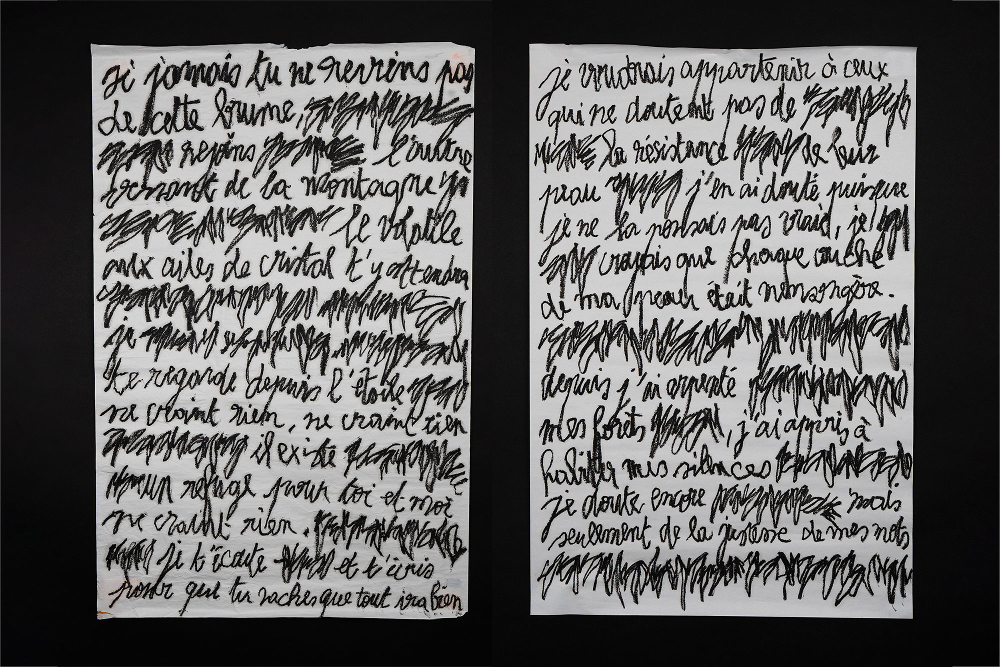
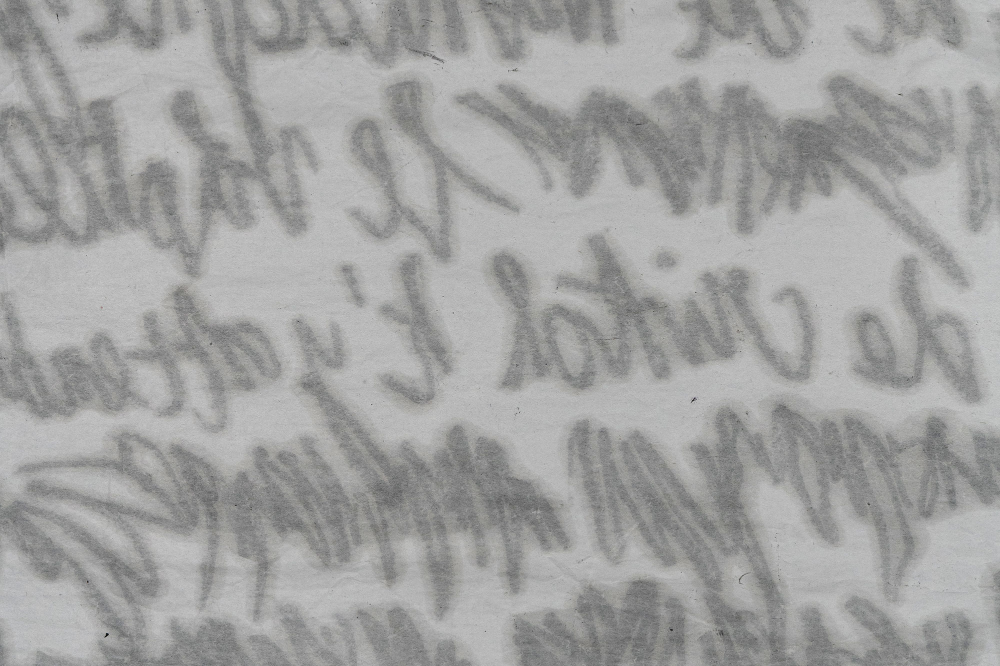
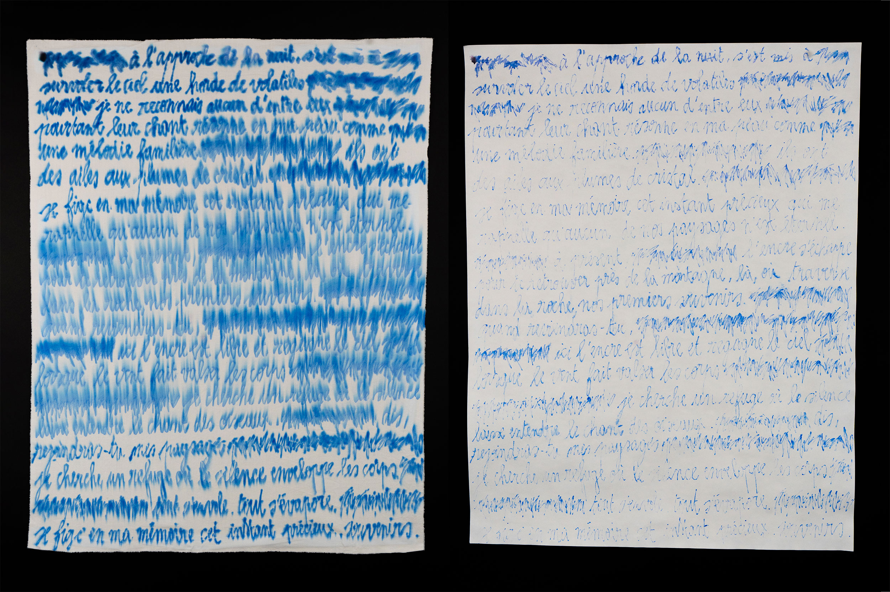
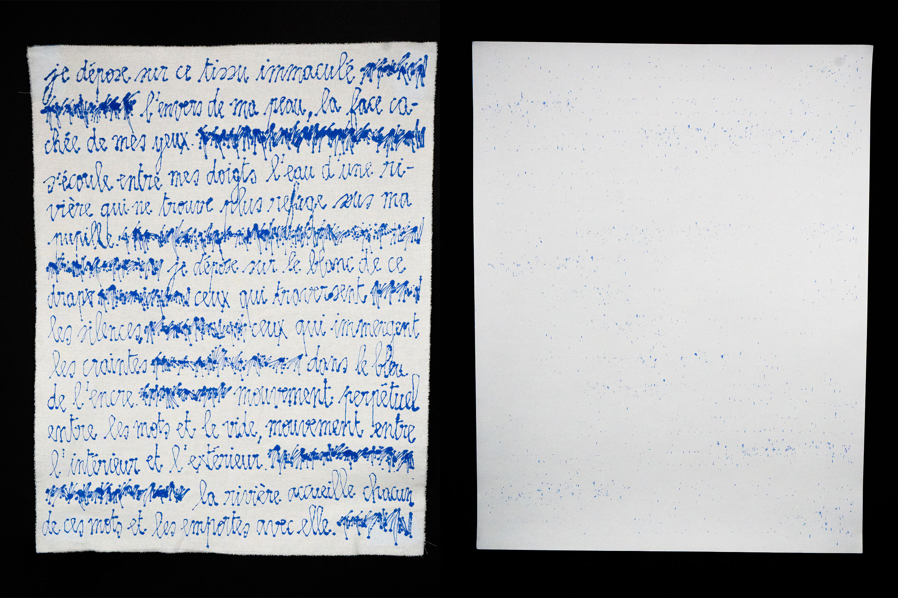
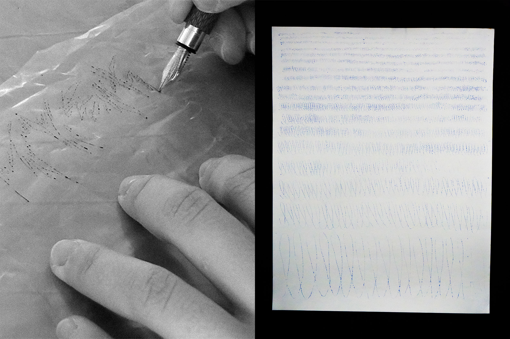
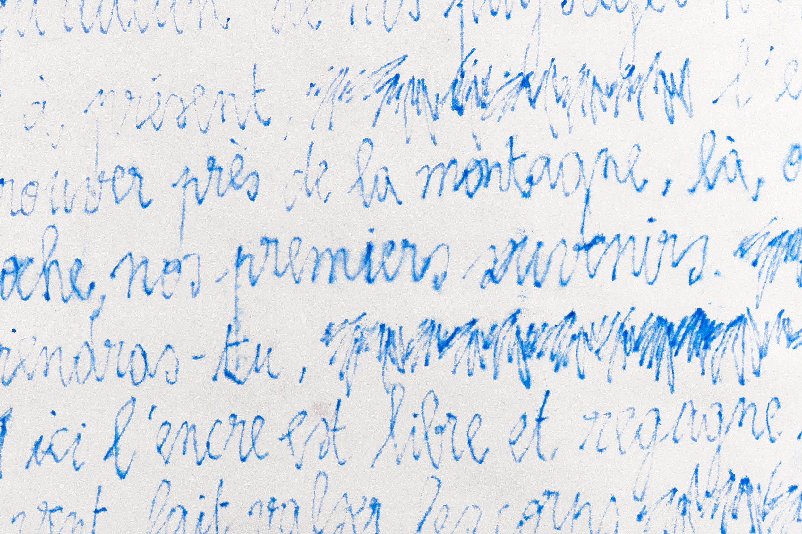
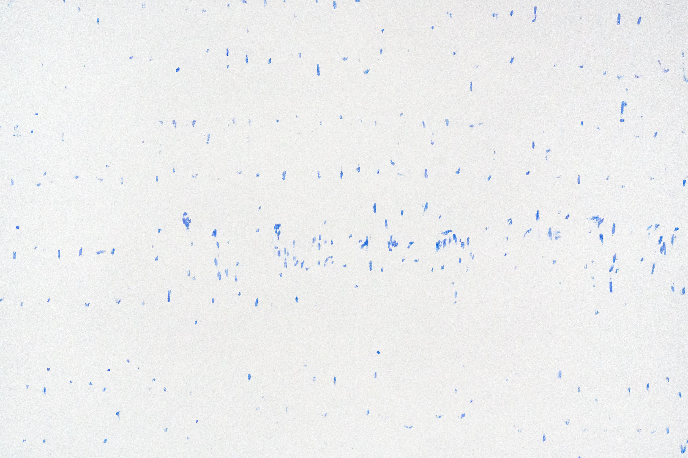
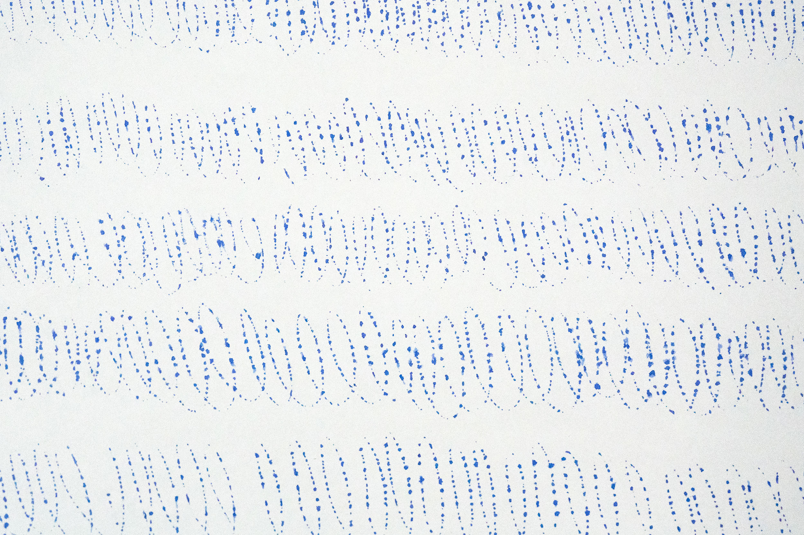
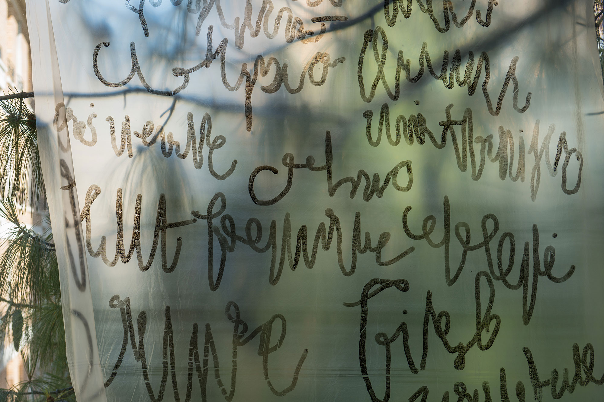

2024-2025
L’acte d’écriture implique le geste d’un corps, qui, par la rencontre
avec l’outil puis la surface, donne
naissance à une trace. Ainsi, l’écriture n’existe pas sans le geste, ils sont intimement liés puisque c’est dans
ce(s) geste(s) que se trouve sa richesse, ses possibilités.
Guidé par ma pratique personnelle de l’écriture manuscrite en tant qu’acte graphique et scriptural,
mais aussi par ma sensibilité pour les objets manuscrits
tels que les brouillons d’écrivains, ce fut pour moi une évidence d’investir
ce sujet dans le cadre de mon
mémoire. Seulement, la pratique de l’écriture
a considérablement évolué avec l’utilisation du numérique et
plus particulièrement des logiciels de traitement de texte, d’où l’apparition d’une nouvelle
conception de
l’écriture considérée comme un art de composition verbale plutôt
que d’inscription manuelle (Tim Ingold
dans son livre Une brève histoire
des lignes (2011)). Il faut envisager une recherche capable de remettre au
centre l’engagement du corps dans l’inscription afin d’aller vers un graphisme qui porte au devant la
présence de l’humain, quitte à tendre vers le subjectif.
Ma problématique est la suivante : Dans quelle mesure le design graphique
peut-il activer la corporéité de l’écriture manuscrite ?
Mon projet de diplôme m'a permis de démontrer comment le design graphique
peut activer la corporéité de l'écriture manuscrite. Je l'ai révélée non plus comme une
trace linéaire, mais comme une présence vivante, matérielle et spatiale.
Cette approche offre
des pistes nouvelles et riches en design graphique pour une réappropriation du geste face à la
dématérialisation de l'acte d'écriture, tout en innovant et en créant des passerelles essentielles
entre l'héritage de ce geste et les défis posés par l'omniprésence du numérique aujourd’hui.
TEMPORALITÉ - Écriture
de l'entre-deux
Dans un second temps, je me suis attaché à rendre visibles les divers moments d’écriture qui participent au rythme de scription, notamment les temps
de réflexion, de doute, d’hésitation. Ainsi, la temporalité vécue par celui
qui écrit est davantage palpable par le lecteur.
J’ai donc élaboré une écriture non lisible, que l’on peut qualifier d’écriture de l’entre-deux afin
de stimuler
le geste et d’habiter, par la trace, ces moments où les mots sont encore
en train
de tournoyer dans l’esprit.



Puis, la technique du transfert m’a permis de mettre en avant le fait que l’écriture n’est pas
une finalité mais un processus en devenir. En effet, j’ai pu remarquer que lors du transfert sur tissu mouillé
la ligne conserve majoritairement son apparence initiale. Elle crée ainsi une mémoire
de la trace, tandis qu’elle se diffuse sur le tissu. Par contraste, le transfert sur tissu sec transforme
la ligne en une suite de points.
Même observation lorsqu’elle passe de la feuille plastique au papier
car l’encre n’est pas absorbée. Ces résultats font particulièrement écho à la transformation du manuscrit
vers le numérique puisque la typographie est construite par une suite de points interconnectés.






J'ai ensuite réalisé cette expérience / performance avec une camarade.
J'ai pu observer comment,
lorsque le geste d'écriture d'un premier corps
est ressenti par un second puis réactivé par
la trace, l'écriture devient
le témoin d'un moment d'interactions corporelles. Elle se transforme
en une expression graphique des sensations vécues, entièrement libérée
du sens des mots.
Ce qui est intéressant ici, c’est la réinterprétation
du mot avec le corps comme filtre qui donne lieu à un langage sensible.

